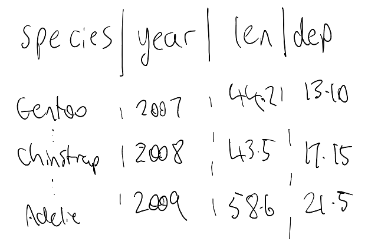

2 The shape of your data
In my experience, a lot of my ggplot problems were actually problems with my data, and how I had it formatted. I found this was especially so early on, when I was learning how to use ggplot.
I believe these data problems are somewhat solved by making sure your data is in a format called “tidy data”. We will talk about what that means, and how to spot data that isn’t “tidy”, and fix it.
We also come back to those missing observations in the oceanbuoys data we look at in Chapter 1.
Overview
Duration 40 minutes
Questions
- What does ggplot2 expect my data to look like?
- How do I make sure the data given is indeed “tidy data”?
- Why did my line graph come out as a sawtooth?
- What happened to the rows with missing values?
What you need this session
- A session of RStudio open
- Something to draw on, and something to draw with
- The following packages installed
2.1 What ggplot2 expects: Tidy Data
The ggplot2 package expects data in a specific format, called “Tidy Data”.
Tidy data is three rules:
- Every variable has its own column
- Every observation has its own row
- Every value has its own cell
I find it easier to check those rules by writing them down or filling in the blanks, something like:
- The variables in the data are: ___
- Each row (observation) represents: ___
- Each cell (value) contains: ___
# A tibble: 9 × 4
species year bill_len bill_dep
<fct> <int> <dbl> <dbl>
1 Adelie 2007 39.1 18.7
2 Adelie 2008 39.6 17.7
3 Adelie 2009 35 17.9
4 Chinstrap 2007 46.5 17.9
5 Chinstrap 2008 50.5 18.4
6 Chinstrap 2009 50.9 17.9
7 Gentoo 2007 46.1 13.2
8 Gentoo 2008 49.1 14.8
9 Gentoo 2009 49.1 14.5For pen_short, that gives us:
- The variables in the data are: species, year, bill_len, bill_dep
- Each row (observation) represents: one penguin, measured in that year
- Each cell (value) contains: a single value
This is a similar to what we did in Chapter 1, but in the other direction. There we said the plot in a sentence before we drew it. Here we say the data in a sentence before we plot it.
If I’m having a hard time working out what the data should look like, I’ll even sketch a table:

As you get more comfortable with R, you can even start to create what the data should look like as a data.frame from scratch - saying out aloud:
- our variables are…
- each row contains …
- each cell contains…
species year bill_len bill_dep
1 gentoo 2007 44.2 13.10
2 chinstrap 2008 43.5 17.15
3 adelie 2009 58.6 21.50I find using tibble::tribble() can be nice for this, as the data format is more human-readable. It doesn’t scale super well for hand writing out data, though:
If you can sketch the plot you want, you can work backwards to the data you need.
These are the benefits of tidy data, and ggplot: your data links to the plot, and the plot links to the data.
Your sketch has air temp on one axis and sea temp on the other: - those are two variables, so those are two columns.
And if you can’t fill in the blanks, it might be a sign your data isn’t tidy yet.
Let’s explore this by breaking each of the rules. We will look again at the pen_short data:
This is the data in tidy data form
# A tibble: 9 × 4
species year bill_len bill_dep
<fct> <int> <dbl> <dbl>
1 Adelie 2007 39.1 18.7
2 Adelie 2008 39.6 17.7
3 Adelie 2009 35 17.9
4 Chinstrap 2007 46.5 17.9
5 Chinstrap 2008 50.5 18.4
6 Chinstrap 2009 50.9 17.9
7 Gentoo 2007 46.1 13.2
8 Gentoo 2008 49.1 14.8
9 Gentoo 2009 49.1 14.5Think back to the plot of pen_short that we had in the previous chapter:

Notice how each of the columns map onto an argument inside aes() ?
Here it is as messy - notice the variables don’t form columns - they are in the rows:
# A tibble: 18 × 4
species year bill_variable measurement
<fct> <int> <chr> <dbl>
1 Adelie 2007 bill_len 39.1
2 Adelie 2007 bill_dep 18.7
3 Adelie 2008 bill_len 39.6
4 Adelie 2008 bill_dep 17.7
5 Adelie 2009 bill_len 35
6 Adelie 2009 bill_dep 17.9
7 Chinstrap 2007 bill_len 46.5
8 Chinstrap 2007 bill_dep 17.9
9 Chinstrap 2008 bill_len 50.5
10 Chinstrap 2008 bill_dep 18.4
11 Chinstrap 2009 bill_len 50.9
12 Chinstrap 2009 bill_dep 17.9
13 Gentoo 2007 bill_len 46.1
14 Gentoo 2007 bill_dep 13.2
15 Gentoo 2008 bill_len 49.1
16 Gentoo 2008 bill_dep 14.8
17 Gentoo 2009 bill_len 49.1
18 Gentoo 2009 bill_dep 14.5Here it is as another flavour of messy - each individual cell contains two values:
# A tibble: 9 × 3
species year bill_ratio
<fct> <int> <chr>
1 Adelie 2007 39.1/18.7
2 Adelie 2008 39.6/17.7
3 Adelie 2009 35/17.9
4 Chinstrap 2007 46.5/17.9
5 Chinstrap 2008 50.5/18.4
6 Chinstrap 2009 50.9/17.9
7 Gentoo 2007 46.1/13.2
8 Gentoo 2008 49.1/14.8
9 Gentoo 2009 49.1/14.5 And yet another messy - this time the year variable is for each column. These each contain measurements of bill depth, and bill length, respectively:
# A tibble: 3 × 4
species `2007` `2008` `2009`
<fct> <dbl> <dbl> <dbl>
1 Adelie 18.7 17.7 17.9
2 Chinstrap 17.9 18.4 17.9
3 Gentoo 13.2 14.8 14.5# A tibble: 3 × 4
species `2007` `2008` `2009`
<fct> <dbl> <dbl> <dbl>
1 Adelie 39.1 39.6 35
2 Chinstrap 46.5 50.5 50.9
3 Gentoo 46.1 49.1 49.1Now let’s go back to the tidy data of penguins:
# A tibble: 9 × 4
species year bill_len bill_dep
<fct> <int> <dbl> <dbl>
1 Adelie 2007 39.1 18.7
2 Adelie 2008 39.6 17.7
3 Adelie 2009 35 17.9
4 Chinstrap 2007 46.5 17.9
5 Chinstrap 2008 50.5 18.4
6 Chinstrap 2009 50.9 17.9
7 Gentoo 2007 46.1 13.2
8 Gentoo 2008 49.1 14.8
9 Gentoo 2009 49.1 14.5And go back again to our ggplot:

Before, each of the columns map onto an argument inside aes().
Now, think about how to do this for a messy dataset:
# A tibble: 18 × 4
species year bill_variable measurement
<fct> <int> <chr> <dbl>
1 Adelie 2007 bill_len 39.1
2 Adelie 2007 bill_dep 18.7
3 Adelie 2008 bill_len 39.6
4 Adelie 2008 bill_dep 17.7
5 Adelie 2009 bill_len 35
6 Adelie 2009 bill_dep 17.9
7 Chinstrap 2007 bill_len 46.5
8 Chinstrap 2007 bill_dep 17.9
9 Chinstrap 2008 bill_len 50.5
10 Chinstrap 2008 bill_dep 18.4
11 Chinstrap 2009 bill_len 50.9
12 Chinstrap 2009 bill_dep 17.9
13 Gentoo 2007 bill_len 46.1
14 Gentoo 2007 bill_dep 13.2
15 Gentoo 2008 bill_len 49.1
16 Gentoo 2008 bill_dep 14.8
17 Gentoo 2009 bill_len 49.1
18 Gentoo 2009 bill_dep 14.5How can we plot “bill depth vs bill length”?
And when there are two values in each cell, how do we plot those?
# A tibble: 9 × 3
species year bill_ratio
<fct> <int> <chr>
1 Adelie 2007 39.1/18.7
2 Adelie 2008 39.6/17.7
3 Adelie 2009 35/17.9
4 Chinstrap 2007 46.5/17.9
5 Chinstrap 2008 50.5/18.4
6 Chinstrap 2009 50.9/17.9
7 Gentoo 2007 46.1/13.2
8 Gentoo 2008 49.1/14.8
9 Gentoo 2009 49.1/14.5 And for the separate years? What do we call these?
# A tibble: 3 × 4
species `2007` `2008` `2009`
<fct> <dbl> <dbl> <dbl>
1 Adelie 39.1 39.6 35
2 Chinstrap 46.5 50.5 50.9
3 Gentoo 46.1 49.1 49.1I’m not saying you can’t plot data from this data. I am saying it is hard to do it. It doesn’t fit into the tool usage.
But when the data is in a standard, “Tidy” form, then this becomes much easier:
# A tibble: 9 × 4
species year bill_len bill_dep
<fct> <int> <dbl> <dbl>
1 Adelie 2007 39.1 18.7
2 Adelie 2008 39.6 17.7
3 Adelie 2009 35 17.9
4 Chinstrap 2007 46.5 17.9
5 Chinstrap 2008 50.5 18.4
6 Chinstrap 2009 50.9 17.9
7 Gentoo 2007 46.1 13.2
8 Gentoo 2008 49.1 14.8
9 Gentoo 2009 49.1 14.5I am not sure if I can overstate the impact of the concept of “Tidy Data” on the R programming world, and statistics in general.
2.2 Making data tidy
I kept the code above hidden so the messy data lands on its own, without pivot_longer() and pivot_wider() giving away the ending.
From here on we run code against those objects, so you need them in your own session. Run this and you will have all four.
pen_short <- penguins |>
as_tibble() |>
select(species, year, bill_len, bill_dep) |>
drop_na() |>
group_by(species, year) |>
slice(1) |>
ungroup()
pen_long_bill <- pen_short |>
pivot_longer(
cols = c(bill_len, bill_dep),
names_to = "bill_variable",
values_to = "measurement"
)
pen_long_bill
pen_two_val <- pen_short |>
mutate(bill_ratio = paste0(bill_len,"/",bill_dep)) |>
select(-bill_len,
-bill_dep)
pen_two_val
# bill_dep
pen_year_bill_dep <- pen_short |>
select(-bill_len) |>
pivot_wider(
names_from = year,
values_from = bill_dep
)
pen_year_bill_dep
# bill_len
pen_year_bill_len <- pen_short |>
select(-bill_dep) |>
pivot_wider(
names_from = year,
values_from = bill_len
)
pen_year_bill_lenIf any of that is unfamiliar, that is fine. It is the rest of this section.
To make this a bit easier to learn, we have our reference set of tidy data, that each of these will convert back to:
# A tibble: 9 × 4
species year bill_len bill_dep
<fct> <int> <dbl> <dbl>
1 Adelie 2007 39.1 18.7
2 Adelie 2008 39.6 17.7
3 Adelie 2009 35 17.9
4 Chinstrap 2007 46.5 17.9
5 Chinstrap 2008 50.5 18.4
6 Chinstrap 2009 50.9 17.9
7 Gentoo 2007 46.1 13.2
8 Gentoo 2008 49.1 14.8
9 Gentoo 2009 49.1 14.5To do the data tidying, we will be looking at two functions:
pivot_wider(): To make our data have more columns, and fewer rowspivot_longer(): To make our data have fewer columns, and more rows.
The problem with pen_long_bill here is that all the “bill” related variables are in a single column.
# A tibble: 18 × 4
species year bill_variable measurement
<fct> <int> <chr> <dbl>
1 Adelie 2007 bill_len 39.1
2 Adelie 2007 bill_dep 18.7
3 Adelie 2008 bill_len 39.6
4 Adelie 2008 bill_dep 17.7
5 Adelie 2009 bill_len 35
6 Adelie 2009 bill_dep 17.9
7 Chinstrap 2007 bill_len 46.5
8 Chinstrap 2007 bill_dep 17.9
9 Chinstrap 2008 bill_len 50.5
10 Chinstrap 2008 bill_dep 18.4
11 Chinstrap 2009 bill_len 50.9
12 Chinstrap 2009 bill_dep 17.9
13 Gentoo 2007 bill_len 46.1
14 Gentoo 2007 bill_dep 13.2
15 Gentoo 2008 bill_len 49.1
16 Gentoo 2008 bill_dep 14.8
17 Gentoo 2009 bill_len 49.1
18 Gentoo 2009 bill_dep 14.5We want to have one variable per column, so we want: “bill_variable” and “measurement” turned into two variables:
- “bill_len”
- “bill_dep”
Where their observations form rows - the values of bill length, and bill depth, respectively.
To make this happen we use pivot_wider(), and use the names_from and values_from arguments:
# A tibble: 9 × 4
species year bill_len bill_dep
<fct> <int> <dbl> <dbl>
1 Adelie 2007 39.1 18.7
2 Adelie 2008 39.6 17.7
3 Adelie 2009 35 17.9
4 Chinstrap 2007 46.5 17.9
5 Chinstrap 2008 50.5 18.4
6 Chinstrap 2009 50.9 17.9
7 Gentoo 2007 46.1 13.2
8 Gentoo 2008 49.1 14.8
9 Gentoo 2009 49.1 14.5names_from: Here we want to create more columns, to make them wider, and we want the names of those columns to come frombill_variablevalues_from: We need the values for our new columns to come frommeasurement
The way I internalise this when I am using the pivot_wider() or pivot_longer() functions, is to always think of:
- Names: What are my tidy columns
- Values: What are my values
Run the code below to create the hi_score dataset:
# A tibble: 8 × 3
score variable values
<dbl> <chr> <chr>
1 11000 game pacman
2 11000 person James
3 9100 game asteroids
4 9100 person James
5 18000 game pacman
6 18000 person Sarida
7 1200 game asteroids
8 1200 person Sarida Now, tidy this using pivot_wider()
Answer code below
Only really click on this if you’ve actually had a go at doing it!
Now try using pivot_wider() with a different dataset: fish_encounters - which contains (type ?fish_encounters to get details) information about fish swimming down a river.
# A tibble: 114 × 3
fish station seen
<fct> <fct> <int>
1 4842 Release 1
2 4842 I80_1 1
3 4842 Lisbon 1
4 4842 Rstr 1
5 4842 Base_TD 1
6 4842 BCE 1
7 4842 BCW 1
8 4842 BCE2 1
9 4842 BCW2 1
10 4842 MAE 1
# ℹ 104 more rowsTidy this using pivot_wider():
Answer code below
Only really click on this if you’ve actually had a go at doing it!
# A tibble: 19 × 12
fish Release I80_1 Lisbon Rstr Base_TD BCE BCW BCE2 BCW2 MAE MAW
<fct> <int> <int> <int> <int> <int> <int> <int> <int> <int> <int> <int>
1 4842 1 1 1 1 1 1 1 1 1 1 1
2 4843 1 1 1 1 1 1 1 1 1 1 1
3 4844 1 1 1 1 1 1 1 1 1 1 1
4 4845 1 1 1 1 1 NA NA NA NA NA NA
5 4847 1 1 1 NA NA NA NA NA NA NA NA
6 4848 1 1 1 1 NA NA NA NA NA NA NA
7 4849 1 1 NA NA NA NA NA NA NA NA NA
8 4850 1 1 NA 1 1 1 1 NA NA NA NA
9 4851 1 1 NA NA NA NA NA NA NA NA NA
10 4854 1 1 NA NA NA NA NA NA NA NA NA
11 4855 1 1 1 1 1 NA NA NA NA NA NA
12 4857 1 1 1 1 1 1 1 1 1 NA NA
13 4858 1 1 1 1 1 1 1 1 1 1 1
14 4859 1 1 1 1 1 NA NA NA NA NA NA
15 4861 1 1 1 1 1 1 1 1 1 1 1
16 4862 1 1 1 1 1 1 1 1 1 NA NA
17 4863 1 1 NA NA NA NA NA NA NA NA NA
18 4864 1 1 NA NA NA NA NA NA NA NA NA
19 4865 1 1 1 NA NA NA NA NA NA NA NAWhat do you notice about this data? If there are missing values, should we do something about them? See the argument values_fill for options here.
Answer code below
# A tibble: 19 × 12
fish Release I80_1 Lisbon Rstr Base_TD BCE BCW BCE2 BCW2 MAE MAW
<fct> <int> <int> <int> <int> <int> <int> <int> <int> <int> <int> <int>
1 4842 1 1 1 1 1 1 1 1 1 1 1
2 4843 1 1 1 1 1 1 1 1 1 1 1
3 4844 1 1 1 1 1 1 1 1 1 1 1
4 4845 1 1 1 1 1 0 0 0 0 0 0
5 4847 1 1 1 0 0 0 0 0 0 0 0
6 4848 1 1 1 1 0 0 0 0 0 0 0
7 4849 1 1 0 0 0 0 0 0 0 0 0
8 4850 1 1 0 1 1 1 1 0 0 0 0
9 4851 1 1 0 0 0 0 0 0 0 0 0
10 4854 1 1 0 0 0 0 0 0 0 0 0
11 4855 1 1 1 1 1 0 0 0 0 0 0
12 4857 1 1 1 1 1 1 1 1 1 0 0
13 4858 1 1 1 1 1 1 1 1 1 1 1
14 4859 1 1 1 1 1 0 0 0 0 0 0
15 4861 1 1 1 1 1 1 1 1 1 1 1
16 4862 1 1 1 1 1 1 1 1 1 0 0
17 4863 1 1 0 0 0 0 0 0 0 0 0
18 4864 1 1 0 0 0 0 0 0 0 0 0
19 4865 1 1 1 0 0 0 0 0 0 0 02.3 Using pivot_longer()
Let’s look at using pivot_longer() with pen_year_bill_dep
# A tibble: 3 × 4
species `2007` `2008` `2009`
<fct> <dbl> <dbl> <dbl>
1 Adelie 18.7 17.7 17.9
2 Chinstrap 17.9 18.4 17.9
3 Gentoo 13.2 14.8 14.5Similar to pivot_wider(), there name and value arguments - this time, we have names_to, values_to, and cols:
# A tibble: 9 × 3
species year bill_dep
<fct> <chr> <dbl>
1 Adelie 2007 18.7
2 Adelie 2008 17.7
3 Adelie 2009 17.9
4 Chinstrap 2007 17.9
5 Chinstrap 2008 18.4
6 Chinstrap 2009 17.9
7 Gentoo 2007 13.2
8 Gentoo 2008 14.8
9 Gentoo 2009 14.5cols: We usecolsas we need to tellpivot_longer()which columns to be acting on. We didn’t need to do that withpivot_wider()as we told it already which columns were being acted on. Note that we need to wrap the years in back ticks (``), as they start with numbers. See below for a workaround.names_to: We specify “years” in quotes as this is the name of the column we are creatingvalues_to: we specify “bill_dep”
It is worth explaining some workarounds for cols - you don’t always want to be specifying every single column name. We can be a little bit crafty and use -species, which says: every column but species.
# A tibble: 9 × 3
species year bill_dep
<fct> <chr> <dbl>
1 Adelie 2007 18.7
2 Adelie 2008 17.7
3 Adelie 2009 17.9
4 Chinstrap 2007 17.9
5 Chinstrap 2008 18.4
6 Chinstrap 2009 17.9
7 Gentoo 2007 13.2
8 Gentoo 2008 14.8
9 Gentoo 2009 14.5We can also do `2007`:`2009` to indicate all columns between 2007 and 2009.
# A tibble: 9 × 3
species year bill_dep
<fct> <chr> <dbl>
1 Adelie 2007 18.7
2 Adelie 2008 17.7
3 Adelie 2009 17.9
4 Chinstrap 2007 17.9
5 Chinstrap 2008 18.4
6 Chinstrap 2009 17.9
7 Gentoo 2007 13.2
8 Gentoo 2008 14.8
9 Gentoo 2009 14.5Note that you cannot do this with just the bare numbers, as it will assume you are referring to column positions by number, not name:
Error in `pivot_longer()`:
! Can't select columns past the end.
ℹ Locations 2007, 2008, and 2009 don't exist.
ℹ There are only 4 columns.See help("tidyr_tidy_select") for more information on specifying column names.
Now try using pivot_longer() with a different dataset: relig_income, which comes bundled inside tidyr. This is a dataset that contains religion and income ranges.
# A tibble: 18 × 11
religion `<$10k` `$10-20k` `$20-30k` `$30-40k` `$40-50k` `$50-75k` `$75-100k`
<chr> <dbl> <dbl> <dbl> <dbl> <dbl> <dbl> <dbl>
1 Agnostic 27 34 60 81 76 137 122
2 Atheist 12 27 37 52 35 70 73
3 Buddhist 27 21 30 34 33 58 62
4 Catholic 418 617 732 670 638 1116 949
5 Don’t k… 15 14 15 11 10 35 21
6 Evangel… 575 869 1064 982 881 1486 949
7 Hindu 1 9 7 9 11 34 47
8 Histori… 228 244 236 238 197 223 131
9 Jehovah… 20 27 24 24 21 30 15
10 Jewish 19 19 25 25 30 95 69
11 Mainlin… 289 495 619 655 651 1107 939
12 Mormon 29 40 48 51 56 112 85
13 Muslim 6 7 9 10 9 23 16
14 Orthodox 13 17 23 32 32 47 38
15 Other C… 9 7 11 13 13 14 18
16 Other F… 20 33 40 46 49 63 46
17 Other W… 5 2 3 4 2 7 3
18 Unaffil… 217 299 374 365 341 528 407
# ℹ 3 more variables: `$100-150k` <dbl>, `>150k` <dbl>,
# `Don't know/refused` <dbl>2.4 Separating columns to make them tidy
When values are combined together, you can use the separate_wider_delim() function to separate them out:
# A tibble: 9 × 4
species year bill_dep bill_len
<fct> <int> <chr> <chr>
1 Adelie 2007 39.1 18.7
2 Adelie 2008 39.6 17.7
3 Adelie 2009 35 17.9
4 Chinstrap 2007 46.5 17.9
5 Chinstrap 2008 50.5 18.4
6 Chinstrap 2009 50.9 17.9
7 Gentoo 2007 46.1 13.2
8 Gentoo 2008 49.1 14.8
9 Gentoo 2009 49.1 14.5 Now try with this data:
# A tibble: 3 × 2
id values
<chr> <chr>
1 handfish m-3
2 rainbow trout f-1100
3 galaxiids m-300 Answer code below
# A tibble: 3 × 3
id sex count
<chr> <chr> <chr>
1 handfish m 3
2 rainbow trout f 1100
3 galaxiids m 300 Clean up the data types
2.5 Sawtoothing
Here’s a plot I have made by accident more times than I would like to admit.
I wrote this one up on my blog, on baby name data rather than penguins: Just Quickly: Removing Sawtooth Patterns in Line Graphs.
It covers a third way this bites you, which we don’t get to here: when your x axis is a factor, ggplot2 quietly groups by x, and group = 1 gives you a zigzag that looks plausible and is wrong.
We have bill length, measured over three years, for three species. So let’s draw a line.
# A tibble: 9 × 4
species year bill_len bill_dep
<fct> <int> <dbl> <dbl>
1 Adelie 2007 39.1 18.7
2 Adelie 2008 39.6 17.7
3 Adelie 2009 35 17.9
4 Chinstrap 2007 46.5 17.9
5 Chinstrap 2008 50.5 18.4
6 Chinstrap 2009 50.9 17.9
7 Gentoo 2007 46.1 13.2
8 Gentoo 2008 49.1 14.8
9 Gentoo 2009 49.1 14.5That is one line - a bit messy!
geom_line() connects the points in the order it meets them. It has no idea that a species is a thing, so it joins Adelie to Chinstrap to Gentoo and then jumps back down to the next year.
group = species tells it where one line stops and the next one starts. colour = species does the same job, and also tells the reader which line is which, which is why I nearly always reach for colour instead.
This is the same behaviour we saw in Chapter 1, where a colour mapping split geom_smooth() into one line per year. A colour mapping implies a grouping.
- Look at
pen_shortagain and trace the line with your finger, in the order the rows appear. Why does it zigzag?
# A tibble: 9 × 4
species year bill_len bill_dep
<fct> <int> <dbl> <dbl>
1 Adelie 2007 39.1 18.7
2 Adelie 2008 39.6 17.7
3 Adelie 2009 35 17.9
4 Chinstrap 2007 46.5 17.9
5 Chinstrap 2008 50.5 18.4
6 Chinstrap 2009 50.9 17.9
7 Gentoo 2007 46.1 13.2
8 Gentoo 2008 49.1 14.8
9 Gentoo 2009 49.1 14.5Add
group = speciesinsideaes(). What happened?Now use
colour = speciesinstead ofgroup = species. What did that fix thatgroupdidn’t?Which of those two would you use, and when?
2.6 Missing Data
Back in Chapter 1, ggplot2 told us it had dropped 81 rows.
Run
vis_miss(oceanbuoys). Which variables are missing, and how much?Now swap
geom_point()forgeom_miss_point()on the air temperature and sea temperature scatterplot. Where do the dropped rows go?Does seeing them change what you think the plot says?